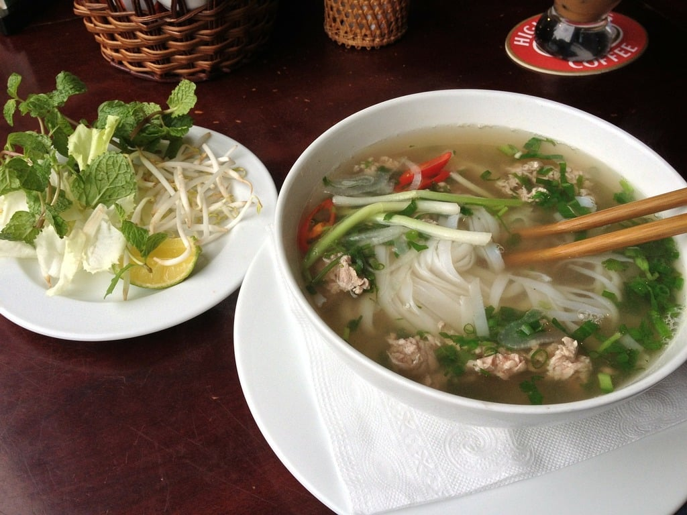

Pho Recipe | Phở

Description
Easily my favorite noodle soup in the world, Pho's signature broth has cured many of my colds whenever I find myself sick.
This Vietnamese dish can have a lot of variation to it but the classic way to serve Pho is with rice noodles, thinly sliced raw beef that
cooks when the hot broth is ladled over it, piles of bean sprouts, thai basil, and coriander/cilantro, lime wedges, and hoisin sauce and sriracha.
I find that beef tenderloin is the best cut, though that is a bit pricy. Thankfully you only need about 30g per serving so a little bit of it goes a long way!
While theres no tricky techniques involved in making this dish, it does have a considerable amout of prep work that needs to be done, as well as a heap of patience.
Ingredients
- Aromatics:
- 2 large onions halved
- 150g/5oz ginger sliced down the center
- Spices:
- 10 star anise
- 4 cinnamon quills
- 4 cardamon pods
- 3 cloves
- 1.5tbsp coriander seeds
- Beef Bones:
- 1.5kg/3lb beef brisket
- 1kg/2lb meaty beef bones
- 1kg/2lb marrow bones
- 3.5l/3.75qt water
- Seasoning:
- 2 tbsp white sugar
- 1 tbsp salt
- 40 ml / 3 tbsp fish sauce
- Noodle Soup - Per Bowl:
- 50g/1.5oz dried rice sticks
- 30g/1oz beef tenderloin, raw, thinly sliced
- 3-5 brisket slices
- Toppings:
- Handful of beansprouts
- Thai basil, 3-5 sprigs
- Lime wedges
- Coriander/cilantro
- Finely sliced red chili
- Hoisin sauce
- Sriracha
Instructions
Aromatics
- Heat a heavy based skillet over high heat until smoking
- Place onion and ginger in pan cut side down. Cook for a few minutes until charred, then turn.
- Remove from pan and set aside for later.
- Toast spices lightly in a dry skillet over medium high heat for 3 minutes.
Remove Impurities
- Rinse bones and brisket then cover with water in large stock pot.
- Boil for 5 minutes, then drain.
- Rinse each bone and brisket under tap water.
Broth
- Wipe pot clean, bring 3.5 liters / 3.75 quarts water to boil.
- Add bones and brisket, onion, ginger, spices
- Add onion ginger, sugar, and salt - water should barely cover everything.
- Cover with lid and simmer for 3 hours.
- Remove brisket, cool then refrigerate for later.
- Simmer remaining soup uncovered for 40 minutes
- Strain broth into another pot, discard bones and spices. Should be about 2.5 liters / 2.65 quarts, if more then reduce.
- Add fish sauce, adjust salt and sugar if needed. Broth should be beefy and fragrant, with spices, savoury and barely sweet.
Assemble
- Prepare rice noodles per packet, just prior to serving.
- Place noodles in bowl. Top with raw beef and brisket.
- Ladle over about 400 / 14 oz hot broth - will cook beef to medium rare.
- Serve with toppings on the side and enjoy!
Home